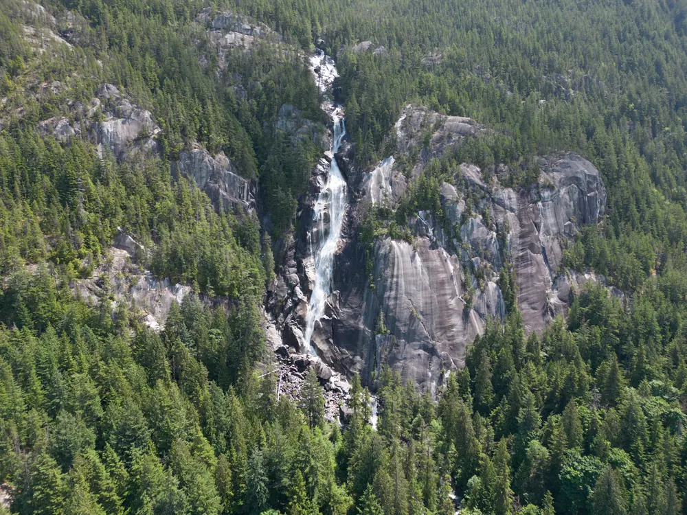

This is general information, not legal advice. Drone rules change, so check the current Transport Canada and NAV CANADA pages before you fly.
Do you need a certificate to fly a drone in Canada?
Yes, for most drones. Canada divides drone flying into basic and advanced operations, and pilots of drones weighing 250 grams to 25 kilograms need a pilot certificate. Basic operations need a basic certificate. Advanced operations, which include flying in controlled airspace or closer to people, need an advanced certificate, which also covers basic operations. Drones in this weight range also need to be registered and marked. Transport Canada explains the categories on its drone safety pages.
Basic vs. advanced operations
- Basic: flying in uncontrolled airspace, staying a safe distance from bystanders, and away from airports and other restricted areas.
- Advanced: flying in controlled airspace, or flying within 30 metres horizontally of bystanders, requires an advanced pilot certificate. A small drone also needs to meet safety assurance requirements for these operations.
- Special flight operations: anything outside those rules needs a Special Flight Operations Certificate from Transport Canada.
The Transport Canada page on advanced operations has the current details.
Controlled airspace and NAV Drone
Flying in controlled airspace is an advanced operation. You need NAV CANADA authorization, which is requested through its NAV Drone system. Many of the places people want aerials from, near airports, heliports and some resort areas, can be affected. Authorization takes time, so build it into the schedule when you book a shoot.
Flying in BC parks and on public land
A lot of the best views in the Sea to Sky are inside provincial parks, such as the Stawamus Chief, Shannon Falls and Garibaldi. Drone use in BC provincial parks is restricted, and launching generally requires a permit from BC Parks, so check their current policy. Even outside parks, you need permission from the landowner to take off and land, and you need to think about privacy for neighbours and anyone who could be photographed.

The rules of thumb that keep you out of trouble
- Keep the drone within visual line of sight at all times.
- Stay at or below 122 metres (400 feet) above ground level.
- Don’t fly over crowds, near emergency operations, or near wildfires.
- Check airspace, parks and land access before you drive out, not when you arrive.
- Respect wildlife and nesting birds, especially around the Squamish estuary and eagle habitat in winter.
- Have a plan for weather: wind and rain are common in the corridor and can end a flight quickly.
Hiring a drone photographer vs. flying yourself
If you only need a photo of your own property, a basic certificate and a consumer drone might be enough. For anything commercial, like real estate, developments, construction progress or tourism, a professional handles the certificates, the airspace checks, the permits and the editing, and delivers photos that actually sell. See my drone photography services in Squamish, Whistler and Pemberton, or my real estate photography if you’d like aerials with interior and exterior shots in one booking.